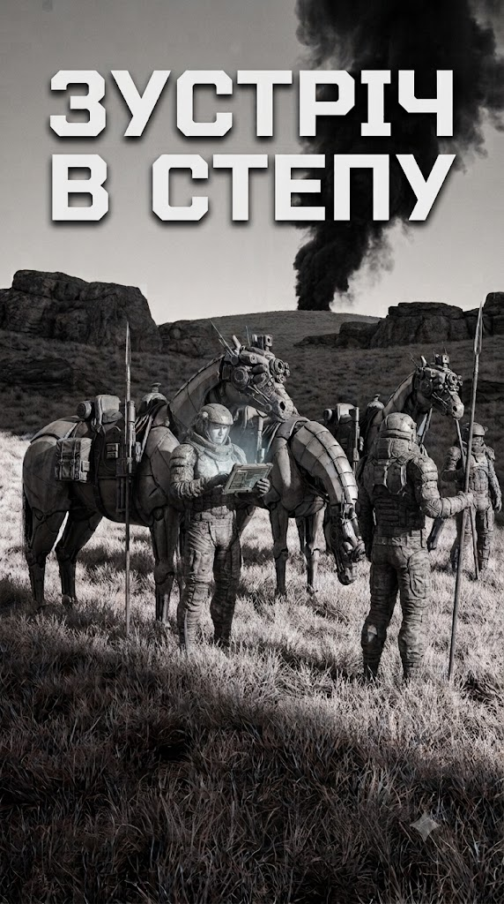

Зустріч в Степу
← Назад до всесвіту Дике Поле Sci-Fi

Про книгу
Планета Дике Поле-17. Степ без кінця й краю, де трава ховає сліди важкої техніки, а повітря ще не навчилося тримати людину без респіратора. Богдан Титар, отаман невеликого загону пластунів-розвідників, веде своїх людей у другий рейд тилами Імперії Сонця. Їхня ціль — мельтовіз, що тягне смертоносний вантаж до лінії облоги єдиного міста-вулика на планеті.
Троє вершників на бот-конях, один важкий вогнемет «Шершень» і наказ знищити транспорт будь-якою ціною. Але степ не прощає помилок. Імперські дрони-сканери методично промацують місцевість ультразвуком, розвідники полюють на розвідників, а кожен бій може стати останнім. Коли нічна атака на конвой обертається погонею з повітря, пластунам лишається покладатися тільки на хитрість, швидкість бот-коней і козацьке братерство.
«Зустріч в степу» — це історія про тих, хто воює в тиші степу, далеко від орбітальних ударів і танкових армад. Про тих, чия зброя — терпіння, а перемога — повернутися додому.